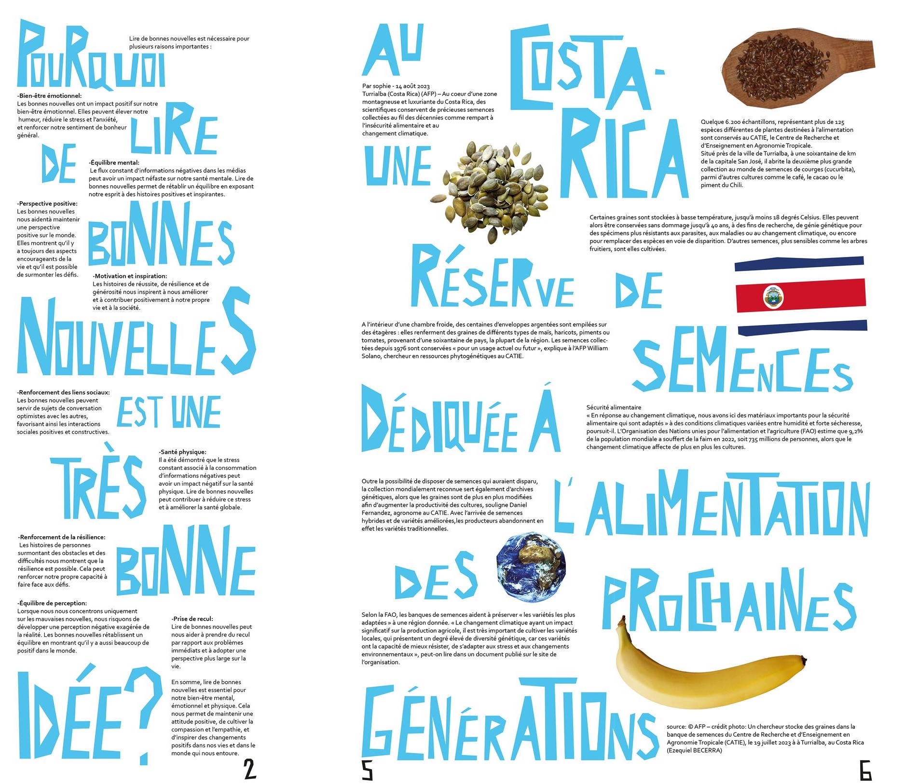
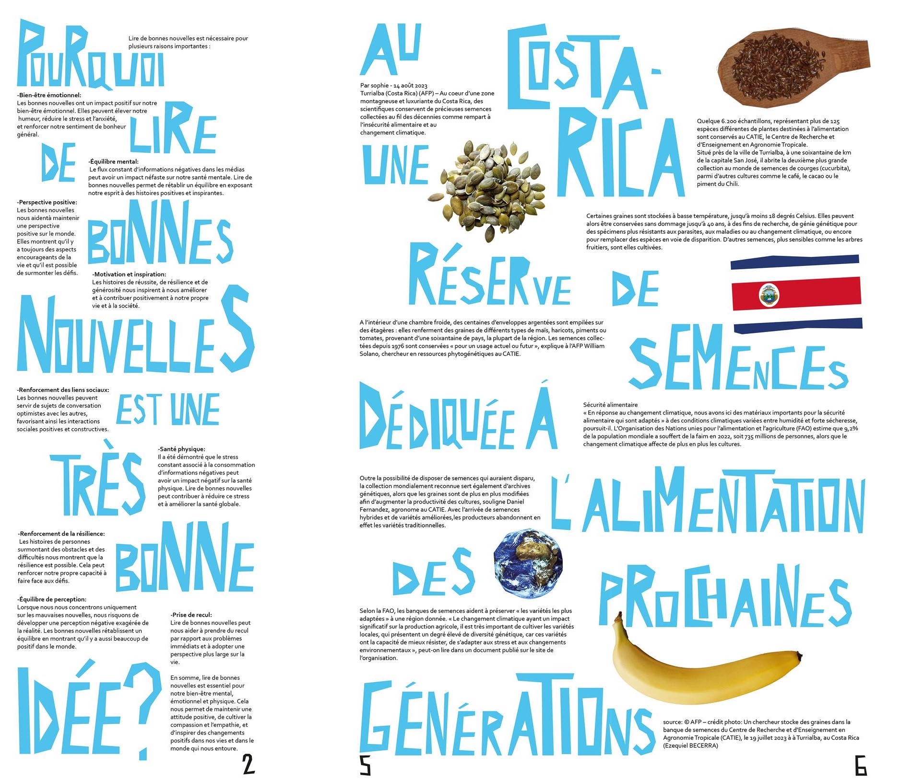

LE VERRE À MOITIÉ PLEIN
Conception de la ligne graphique d’un journal qui communique sur les bonnes nouvelles. Je me suis concentrée sur la spontanéité à travers le papier découpé qui évoque la sincérité qu’on peut retrouver à travers la lecture de bonnes nouvelles.
J’ai imaginé une typo en papier découpé que l’on peut retrouver sur les journaux afin de concevoir une identité forte pour la revue.